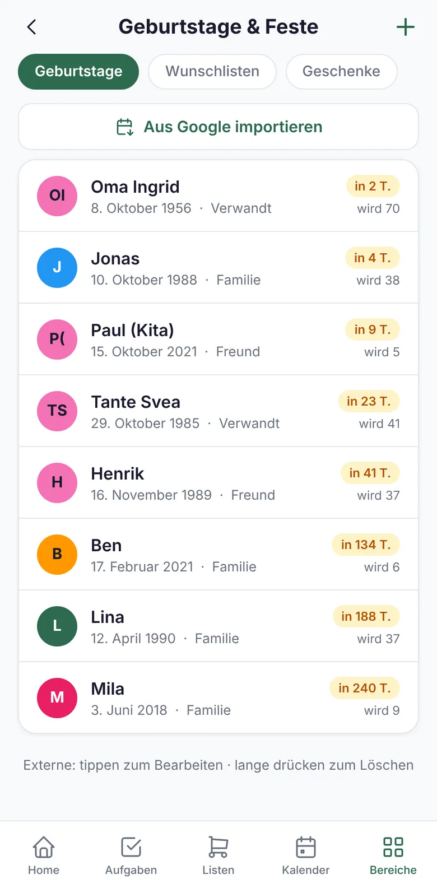

Alles, was sonst im Chat, auf Zetteln oder im Kopf liegt.
Viel Mental Load besteht aus Kleinigkeiten, die irgendwo stehen: der Wunsch, den jemand nebenbei erwähnt hat, das Foto der Einladung, die schnelle Notiz. Nestio gibt ihnen einen festen Platz.
- Oma hat am Samstag Geburtstag!
- Anna hatte sich doch was gewünscht. Wo stand das?
- Wo ist das Foto von der Einladung?
- Schnell aufschreiben, aber wohin?
Steht in Nestio. Für alle im Haushalt.
Das Geschenk hab ich schon gekauft. Nur wo hab ich es versteckt?
Rechtzeitig gratulieren, das passende Geschenk parat.
Geburtstage von Familie und Freunden, auf Wunsch aus Google übernommen. Nestio erinnert eine Woche vorher und am Tag selbst.
- Ideen festhalten, wenn sie kommenEtwas nebenbei erwähnt, im Laden gesehen? Sofort als Geschenkidee für die Person notieren.
- Gekauft und verstecktGekaufte Geschenke markieren. Am Tag der Feier stehen sie auf der Mitnehmen-Liste.
- WunschlistenJede Person sammelt eigene Wünsche, die anderen schauen nach.

Kein Geburtstag rutscht mehr durch, auch nicht der von Oma.
Was steht diese Woche eigentlich an?
Der Kalender, den ihr schon habt.
Nestio zeigt die Termine aus Google Kalender an. Ihr müsst nichts umziehen und nichts doppelt pflegen.
- Termine im TagesüberblickUnter „Heute“ und „Demnächst“ stehen Termine neben Aufgaben und Geburtstagen.
- Mitbringen erkanntTermine mit „Mitbringen: …“ landen auf der Mitnehmen-Liste, der Kinderarzt erinnert an das U-Heft.
- Nur lesendNestio verändert nichts an euren Kalendern. Welche angezeigt werden, wählt ihr selbst.
Ein Ort für den Wochenüberblick, ohne zwischen Apps zu wechseln.
Wo war das Foto von der Einladung?
Ein fester Platz für Dokumente und Notizen.
Die Einladung zum Kindergeburtstag, der Impfpass, die WLAN-Daten für Gäste: Was sonst im Fotoalbum oder auf einem Zettel verschwindet, liegt in Nestio griffbereit.
- Dateien und FotosNach Kategorien geordnet, für alle im Haushalt erreichbar.
- Pinnwand statt SchmierzettelSchnell etwas notieren oder eine Checkliste anlegen. Wichtiges oben anpinnen.
Gesucht wird nicht mehr in fünf Apps, sondern an einer Stelle.
Welche Schuhgröße hat er gerade?
Die wichtigen Daten jedes Familienmitglieds.
Profile mit allem, was im Alltag plötzlich gebraucht wird: Krankenkasse, Notfallkontakt, Allergien, Kleider- und Schuhgröße, Schule und Klasse. Kinder und Großeltern brauchen dafür kein eigenes Konto.
- Beim Arzt sofort zur HandKrankenkasse, Kassennummer und Medikamente im Profil.
- Beim Einkaufen sofort zur HandAktuelle Größen der Kinder, für alle im Haushalt sichtbar.
- Gemeinsam statt alleinPartnerin oder Partner kommt per Einladungscode dazu und sieht denselben Stand.
Das Wissen über die Familie steckt nicht mehr nur in einem Kopf.